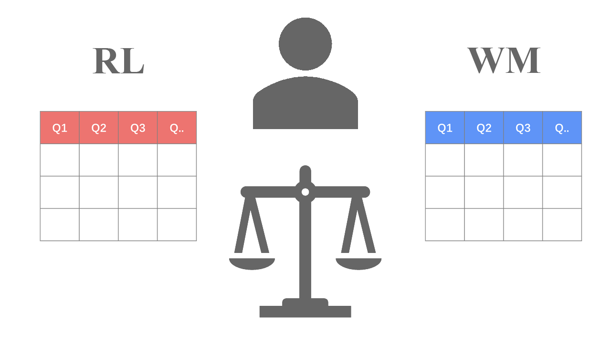
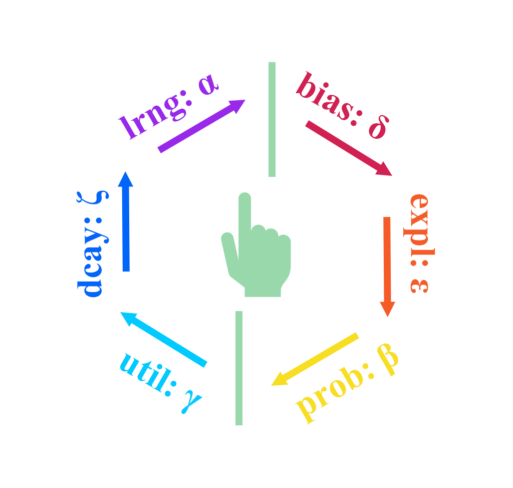

Overview
This package modularizes the Markov Decision Process (MDP) into six core components, enabling users to flexibly construct the Rescorla-Wagner Model for Multi-Armed Bandit tasks (see Sutton & Barto, 2018). Beginners can define models using simple if-else logic, making model construction more accessible (built-in three basic models, see Niv et al., 2012).
-
Step 1: Build Reinforcement Learning Models
run_m() -
Step 2: Parameter and Model Recovery
rcv_d() -
Step 3: Fit Real Data
fit_p() -
Step 4: Replay the Experiment
rpl_e()
These four steps follow the ten simple rules for the computational modeling of behavioral data (Wilson & Collins 2019)
Installation
# Install the stable version from CRAN
install.packages("multiRL")
# Install the latest version from GitHub
remotes::install_github("yuki-961004/multiRL@*release")
# Load package
library(multiRL)
# Obtain help document
?multiRLMultiple Choices
Obviously, this package supports multi-choice tasks. In addition, we do not know what humans treat as the target when they encounter a particular state and update their values, especially when the cue and the response are not the same. In such cases, the agent typically needs to learn latent rules.

Multiple Systems
When humans make decisions, multiple cognitive processing systems may be involved (e.g., RL, WM, …). Each cognitive system may update its own Q-value representation, and these multiple Q-value estimates are then combined with different weights to influence the final choice.

system = c("RL", "WM", "...")Multiple Modules

# learning-rate function
lrng_func = multiRL::func_alpha\[ Q_{new} = Q_{old} + \alpha \cdot (R - Q_{old}) \]
# soft-max function
prob_func = multiRL::func_beta\[ P_{t}(a) = \frac{ \exp\left( \beta \cdot \left( Q_t(a) - \max_{j} Q_t(a_j) \right) \right) }{ \sum_{i=1}^{k} \exp\left( \beta \cdot \left( Q_t(a_i) - \max_{j} Q_t(a_j) \right) \right ) } \]
# utility function
util_func = multiRL::func_gamma\[ U(R) = {R}^{\gamma} \]
# bias function (upper-confidence-bound, sticky, ...)
bias_func = multiRL::func_delta\[ \text{Bias} = \delta \cdot \sqrt{\frac{\log(N + e)}{N + 10^{-10}}} \]
# exploration function (ε-first, ε-greedy, ε-decrasing)
expl_func = multiRL::func_epsilon\[ P(x) = \begin{cases} \epsilon, & x=1 \\ 1-\epsilon, & x=0 \end{cases} \]
# decay function (working memory)
dcay_func = multiRL::func_zeta\[ W_{new} = W_{old} + \zeta \cdot (W_{0} - W_{old}) \]
Reference
- Sutton, R. S., & Barto, A. G. (2018). Reinforcement Learning: An Introduction (2nd ed). MIT press.
- Wilson, R. C., & Collins, A. G. (2019). Ten simple rules for the computational modeling of behavioral data. Elife, 8, e49547. https://doi.org/10.7554/eLife.49547
- Niv, Y., Edlund, J. A., Dayan, P., & O’Doherty, J. P. (2012). Neural prediction errors reveal a risk-sensitive reinforcement-learning process in the human brain. Journal of Neuroscience, 32(2), 551-562. https://doi.org/10.1523/JNEUROSCI.5498-10.2012
- Collins, A. G., & Frank, M. J. (2012). How much of reinforcement learning is working memory, not reinforcement learning? A behavioral, computational, and neurogenetic analysis. European Journal of Neuroscience, 35(7), 1024-1035. https://doi.org/10.1111/j.1460-9568.2011.07980.x
- Eckstein, M. K., & Collins, A. G. (2020). Computational evidence for hierarchically structured reinforcement learning in humans. Proceedings of the National Academy of Sciences, 117(47), 29381-29389. https://doi.org/10.1073/pnas.1912330117